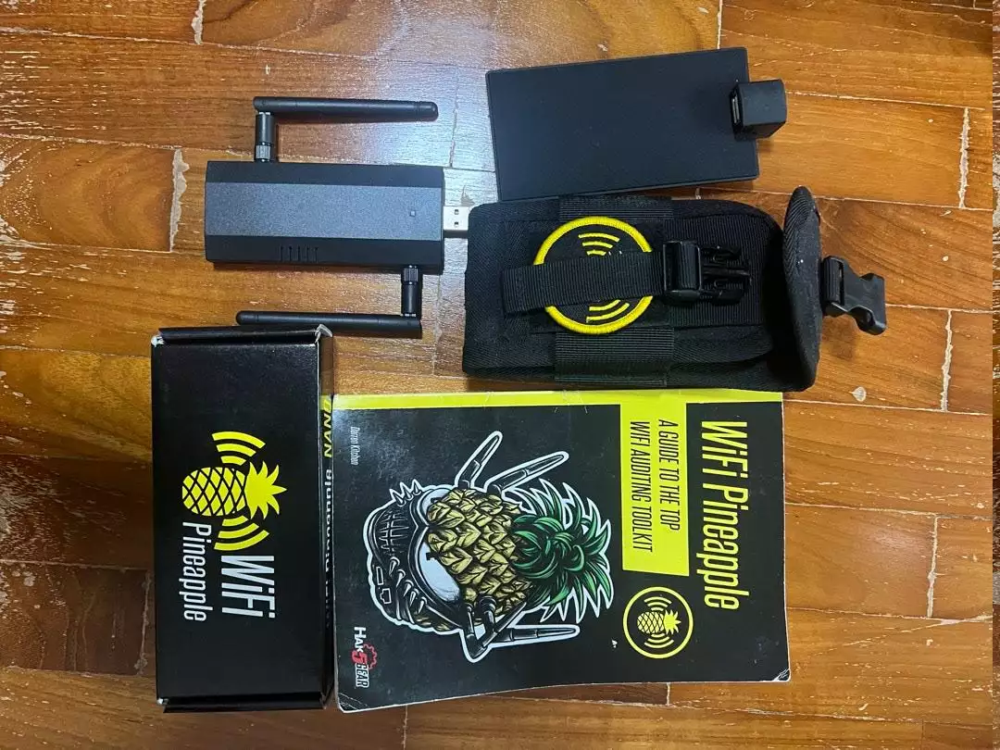

Ordet Wardriving myntades kring 2001 och är en aktivitet där man med hjälp av en dator, mobiltelefon, Playstation Portable eller Nintendo DS etc. åker, går, cyklar, springer eller flyger i jakt på öppna och oskyddade nätverk. Den svenska benämningen är nätpejling och normalt är det någon typ av IEEE 802.11-baserat trådlöst nät som åsyftas.
NÄTPEJLING
Det är varken olagligt att utföra, eller direkt farligt för dig som äger nätverket, men kan av en hotaktör användas som ett vapen för att göra intrång i ditt system eller som en del av kartläggning av målperson.
Det hålls tävlingar i Wardriving där man på kortast tid ska hitta så många nya nätverk som möjligt.
Mer dedikerad utrustning än din smartphone finns givetvis tillgänglig, med ökad förmåga till intrång och avlyssning - likt denna WiFi Pineapple.

En Wifi Pineapple från Hak5
⚠️ ALL ANVÄNDNING SKER PÅ EGEN RISK. TEXTEN ÄR I RENT INFORMATIVT SYFTE.
SKYDD
För att skydda sig mot intrång och dataförlust kan vi vidta ett par direkta åtgärder:
- var skeptisk mot öppna nätverk
- använd en VPN som krypterar din data när du ÄNDÅ använder öppna nätverk.
- surfa ALLTID på HTTPS och håll dig borta från HTTP.
- stäng av WiFi när det inte används, samt funktionen att automatiskt koppla upp sig mot öppna nätverk genom mobilen.
- byt namn på ditt nätverk till något som inte sticker ut, som inte är routertillverkarens standardnamn.
Anledningen till varför vi inte vill behålla routerns grundinställda namn är för att en hotaktör med den informationen kan veta vilken typ av lösenord den routern kommer förinställd med. Vet man att ex. Netgear använder sig av en sifferkombination med en längd av 6 tecken är det lätt att fokusera sin attack. Det behövs knappast nämnas att säkerhetsnivån för din router sätts på minst WPA2.
⚠️ EN 6 TECKEN LÅNG SIFFERKOMBINATION ÄR ENKEL ATT CRACKA.
VAD VI SÄNDER UT
Alla enheter sänder ut BSSID (basic service set identifier). Detta är enhetens MAC-adress. De första 6 tecknen är enhetsspecifika, vilket betyder att det ändå går att få reda på tillverkare. Exempelvis här: https://standards-oui.ieee.org/oui/oui.txt
Att dölja sitt SSID (service set ID) kan tyckas vara bra (vilket det kan vara mot en mer passiv spanare), men data skickas fortfarande och kan således snappas upp med rätt utrustning. Detta kan alltså ses som en falsk trygghet om man är lagd åt det mer paranoida hållet.
SIGINT
I linje med datarapporteringsterminals syfte ska vi självklart använda detta till vår fördel, om än mer arkiverat under kategorin “heh, detta var ju lite kul”, för att få en känsla för hur etern ser ut i vår omgivning.
KOM IGÅNG
- Skapa ett konto på wigle.net
- Ladda ner appen WiGLE WiFi Wardriving från Google Play. Apple slog tidigt ner på denna möjlighet, så har du inte Android kan jag inte hjälpa dig*.
- Gå ut och börja jaga nätverk.
- Ladda upp dina fynd till databasen på wigle.net och utforska deras heatmap.
*möjligheten kanske finns, men den känner inte jag till; googla.
INITIALA REFLEKTIONER
Du kommer initialt troligtvis märka två saker;
- Den absoluta majoriteten nätverk är skyddade. Detta är bra.
- Det finns väldigt många nätverk - både WiFi och Bluetooth.
Utöver att det är någorlunda intressant att se lila prickar på en karta finns det ett par use-cases där detta kan vara relevant ur ett OSINT-perspektiv, exempelvis för att ta reda på hur en mobil rört sig eller vilka enheter som sänder i din närhet och när. Kartan visar också befolkningstäthet och i viss mån rörelsemönster. När vi dessutom förstår hur en hotaktör kan använda tekniken emot oss blir det lättare att skydda sig.
I övrigt är denna aktivitet mer att ses som en nördig aktivitet och en bra infart till området SIGINT, primärt DIY SIGINT.
UTRUSTNING
Vill man ta det ett steg längre, förbi sin Android, finns det mer eller mindre dyr, dedikerad utrustning att införskaffa. Vill man inte ta det riktigt så långt rekommenderas att använda en laptop som kör Linux tillsammans med Kismet, en GPS- och WiFi-mottagare.
AVSLUTNINGSVIS
Även om detta kan tyckas vara trivialt kan det, förutom att vara ett roligare alternativ till Pokemon Go (aktuell referens) vara en inkörsport till ny kunskap och vidare efterforskning i ämnet.